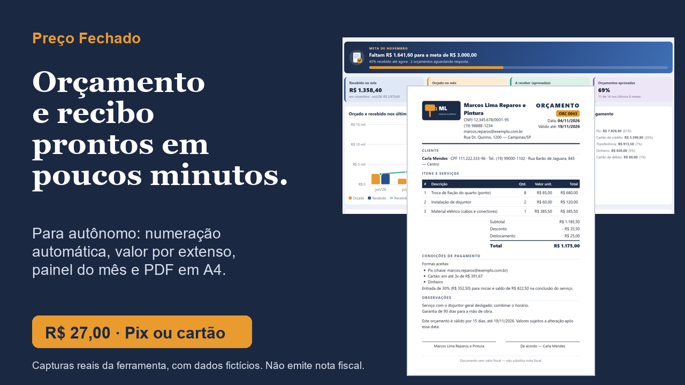
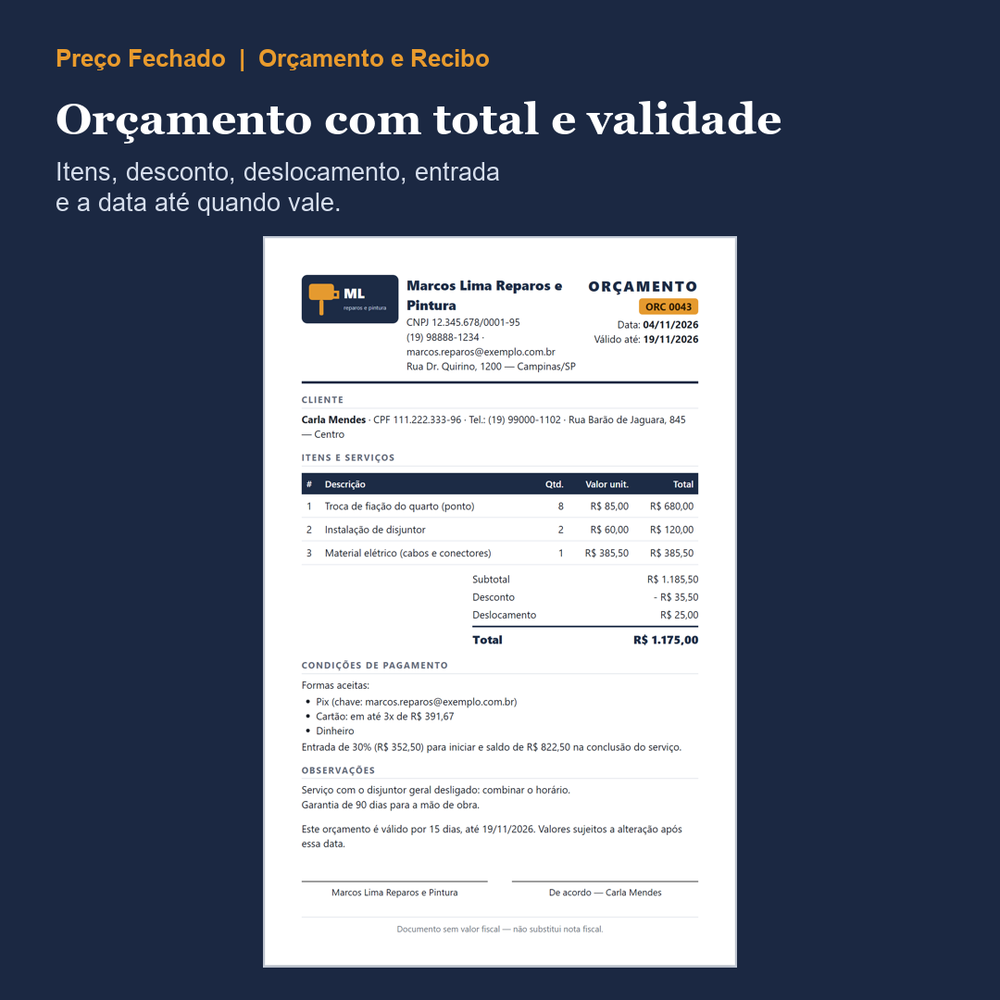
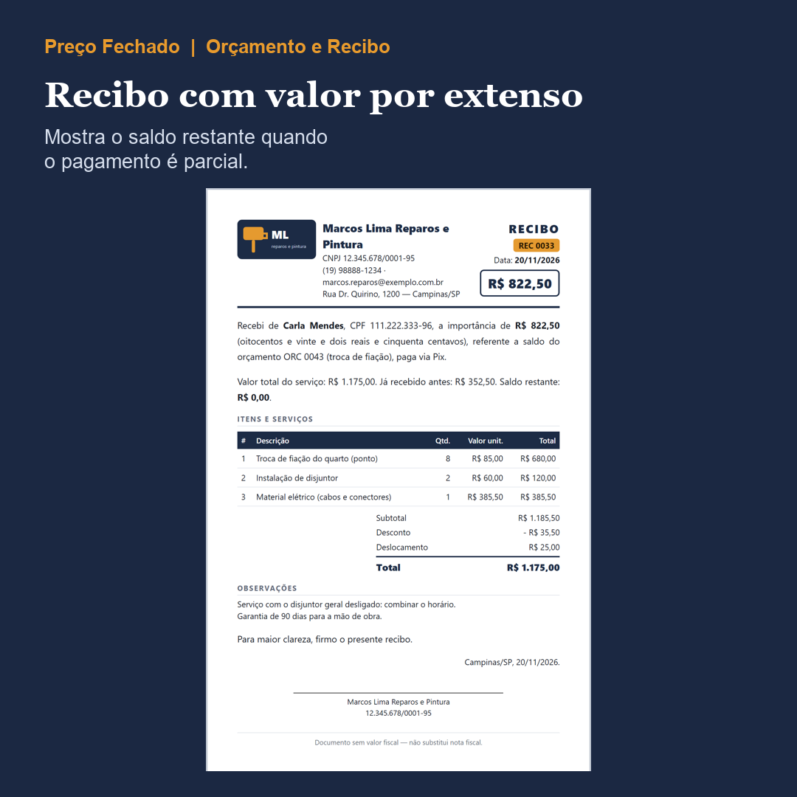
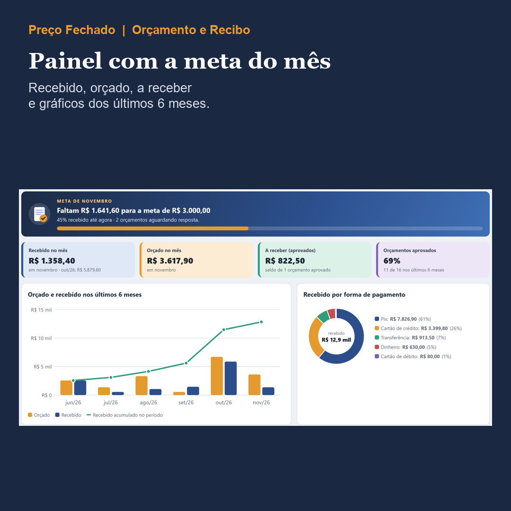
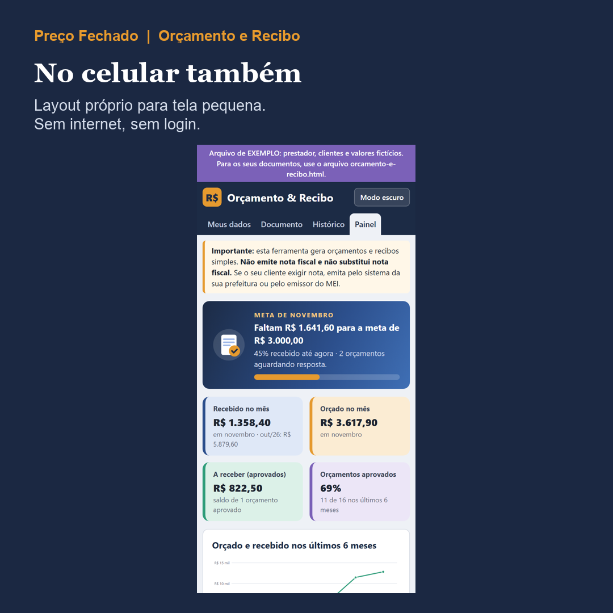

Preço Fechado
Monte o orçamento do cliente e, depois, o recibo do pagamento, em poucos minutos e sem refazer tudo no Word.
O Orçamento e Recibo é uma ferramenta de arquivo único que abre no navegador: você preenche os dados do serviço e ela monta o documento em A4, com numeração automática e valor por extenso, pronto para imprimir ou salvar em PDF.

Importante: a ferramenta gera orçamento e recibo simples. Ela não emite nota fiscal e não substitui nota fiscal.
O problema
O preço vai por mensagem de WhatsApp, o combinado se perde e, na hora de comprovar o pagamento, o recibo sai escrito à mão. Fica difícil saber o que foi orçado, o que o cliente aprovou e quanto ainda falta receber.
O que é
Um app que abre no navegador do computador e do celular, sem internet e sem login. Você recebe o app em branco, um app de exemplo já preenchido (prestador e clientes fictícios) e um guia em PDF ilustrado, passo a passo.

O que vem
- Seus dados salvos uma vez: nome ou negócio, CPF ou CNPJ (opcional), telefone, endereço, chave Pix e logotipo
- Orçamento com itens, quantidade, valor, desconto por item e geral, deslocamento (valor fixo mais km rodado), validade em dias e assinatura de "de acordo"
- Condições de pagamento: Pix, cartão com o valor da parcela, dinheiro, transferência, entrada e saldo
- Recibo com valor por extenso, forma de pagamento e saldo restante quando o pagamento é parcial
- Numeração automática (ORC 0001, REC 0001), datas em DD/MM/AAAA
- Histórico com busca, situação de cada orçamento, duplicar e gerar o recibo a partir do orçamento
- Painel com a meta do mês, o que foi recebido e orçado, o que ainda falta receber e gráficos dos últimos 6 meses
- Modo escuro, layout para o celular e cópia de segurança em arquivo
- Guia em PDF ilustrado


Para quem é
Autônomo e prestador de serviço (reformas, beleza, limpeza, assistência técnica, freelancer, confeitaria por encomenda) que quer orçar e dar recibo de forma organizada.
Para quem não é
Quem precisa emitir nota fiscal: a ferramenta não emite nota fiscal e não substitui nota fiscal. Se o seu cliente exigir nota, emita pelo sistema da prefeitura ou pelo emissor do MEI. Ela também não calcula imposto nem garante venda ou resultado: só organiza os documentos com os números que você informar.
Como acessar
Pague por Pix ou cartão na Kiwify. Os arquivos (um .zip com o app em branco, o exemplo e o LEIA-ME, mais o guia em PDF) ficam na área do comprador e chegam no seu e-mail. Extraia o .zip e abra o app no navegador (Chrome ou Edge).
Funciona no navegador do computador e do celular Android. No iPhone/iPad, o arquivo abre só para consulta: para preencher, use um computador ou um celular Android, e leve os dados pelo backup.

Pagamento único. Pix ou cartão. Garantia de 7 dias: se não servir para você, o reembolso é sem burocracia.